Префектура Нара · Нара, Уда, Сакураи · еда и ремёсла
Нара, где всё началось: родина сакэ, чая, сладкой булочки, колотого льда, веера и туши
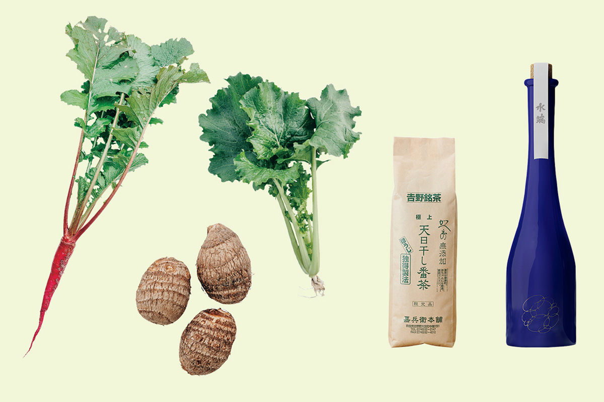
Многое из того, что японцы едят и пьют каждый день, впервые появилось в Наре. Прозрачное сакэ, чай, сладкие булочки мандзю и даже колотый лёд ведут свою историю отсюда. Мы собрали места, где можно увидеть начало, и адреса, где попробовать или купить то, что из этого выросло.
Сакэ
Храм Сёрякудзи: откуда пошло прозрачное сакэ
Нару называют родиной многих вещей, и прежде всего еды. Здесь начинались прозрачное сакэ, чай Ямато, местные овощи, булочки мандзю и колотый лёд какигори.
Прозрачное сакэ, по преданию, впервые сварили в храме Сёрякудзи на окраине города Нара. В хронике сакэварения XV века «Госю-но никки» записан способ, которым сакэ делали в этом храме. Именно эту технологию считают прообразом современного японского сакэ.
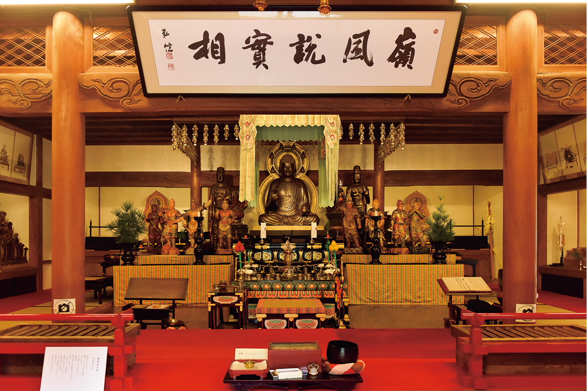
Храм основали в 992 году. Рис, который приносили монастырские поместья, шёл на сакэ для подношений богам-хранителям и буддийским божествам. Так монахи выработали приёмы сакэварения и среди них «бодаймото», прообраз закваски для сакэ. Эту технику унаследовало «Нанто морохаку», сакэ нарских храмов, и её считают предком нынешнего способа варить прозрачное сакэ.
Храм Сёрякудзи
- Адрес
- префектура Нара, Нара, Бодайсан-тё, 157
- Сайт
- shoryakuji.jp
Попробовать
Сакэ по старому рецепту: Imanishi Shuzo и Yucho Shuzo
Сакэ, сваренное по технике храма Сёрякудзи, можно попробовать у двух сакэварен.
Imanishi Shuzo основали в 1660 году в Миве, рядом со святилищем Омива. Это место и само считается одной из родин сакэварения. Девиз сакэварни звучит как «чистое и честное сакэ», а марка её сакэ «Мимуро-суги». В 2025 году здесь открылся новый цех «Мива дэнсё-гура», где всё сакэ ставят только на закваске бодаймото.
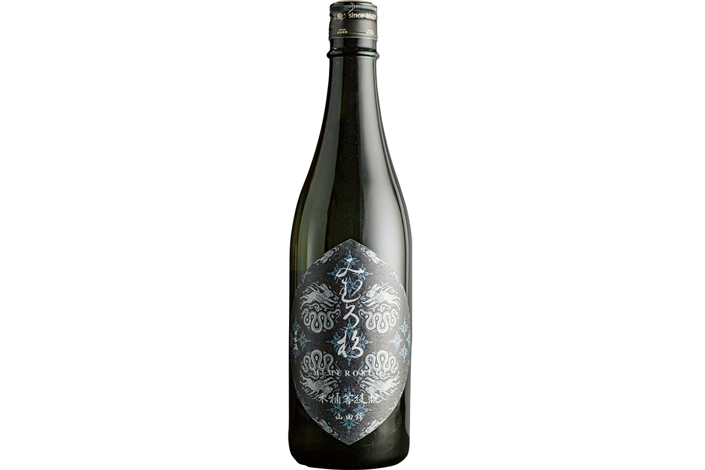
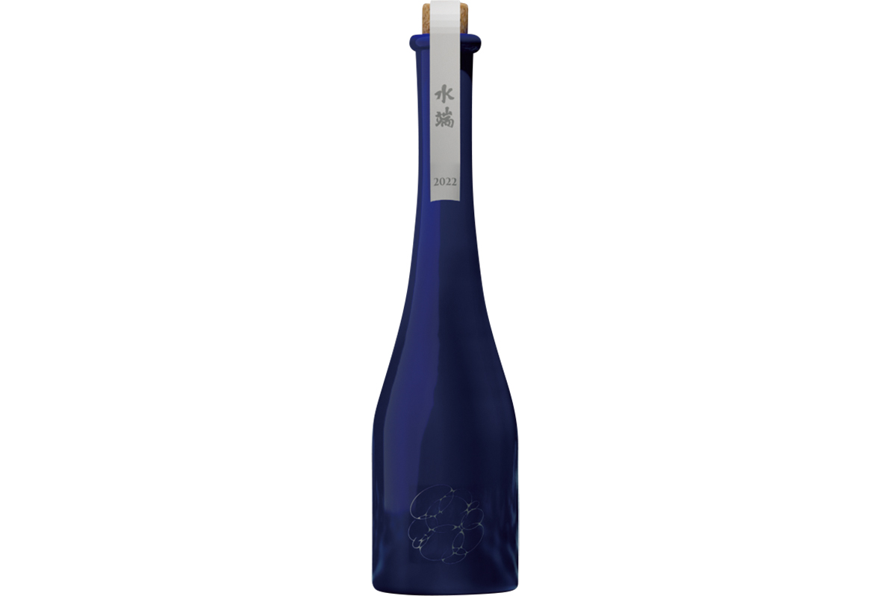
Imanishi Shuzo
- Адрес
- префектура Нара, Сакураи, Мива, 510
- Телефон
- +81 744-42-6022
- Часы работы
- 10:00–17:00
- Выходные
- воскресенье
Yucho Shuzo из Госэ основали в 1719 году, и знают её по смелому сакэ Kaze no Mori. В 2024 году заработал её второй цех у подножия горы Кацураги, «Кацураги-санроку дзёдзосё», где варят S Kaze no Mori. А в марке «Мидзухана» сакэварня изучает классические приёмы и каждый день учится заново.
Yucho Shuzo
- Адрес
- префектура Нара, Госэ, 1160
- Телефон
- +81 745-62-2047
- Часы работы
- 9:00–17:00
- Выходные
- суббота, воскресенье
- Сайт
- yucho-sake.jp
Чай
Храм Буцурюдзи: первые чайные кусты Японии
Чай Ямато, по преданию, начался в 806 году. Монах Кукай (774–835), он же Кобо-дайси, основатель школы сингон, привёз из танского Китая семена чая и отдал их своему ученику Кэнъэ. Тот посеял их на востоке префектуры, в нынешнем городе Уда. Отсюда чай и разошёлся по стране. Позже, в 1738 году, крестьянин Соэн Нагатани (1681–1778) из деревни Удзитавара под Киото придумал, как делать листовой зелёный чай сэнтя, и начал продавать его в Эдо. С этого сэнтя пошёл по всей Японии.
Храм Буцурюдзи, по преданию, основал сам Кэнъэ в 850 году на той земле, где посеял чай.
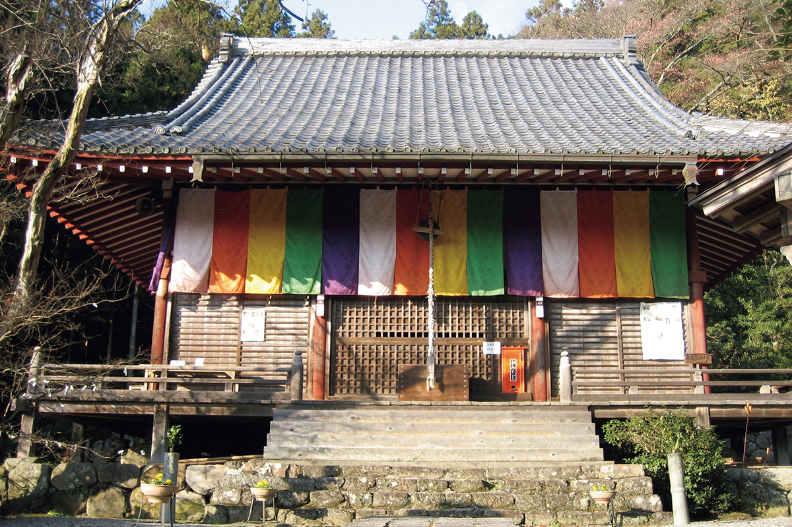
Храм Буцурюдзи
- Адрес
- префектура Нара, Уда, Хайбара-Акахани, 1684
- Телефон
- +81 745-82-2714
- Часы работы
- 9:00–16:30
Попробовать
Чай Ямато: «Ти-фарм Инокура» и «Кахэй хомпо»
«Ти-фарм Инокура» выращивает чай в Цукигасэ, чайном краю на востоке города Нара. Её главный чай «Тамаюра» относится к кабусэ-сэнтя: перед сбором кусты накрывают от солнца. У него сладкий аромат молодых листьев и мягкий, густой вкус. Срывают только верхушку побега с двумя листьями, поэтому вкус особенно глубокий. Его хорошо заваривать и холодной водой, и на льду.
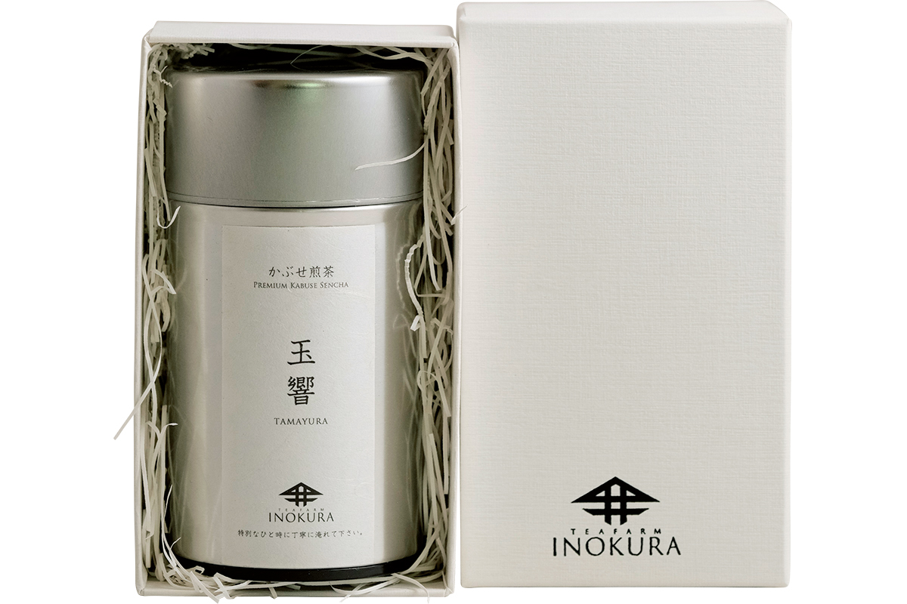
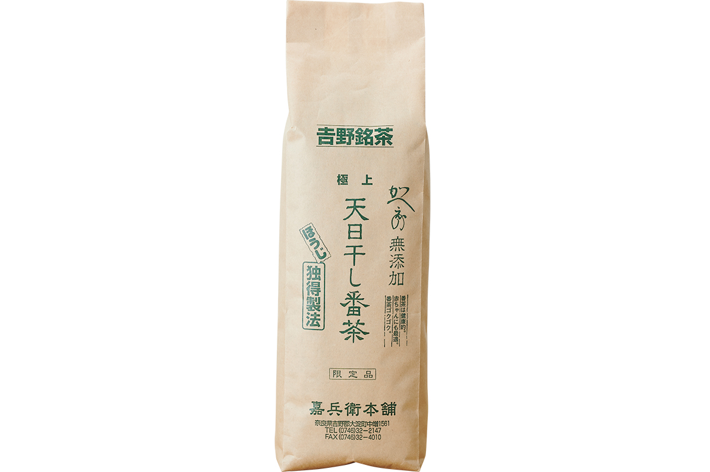
«Ти-фарм Инокура», магазин «Суйсуй»
- Адрес
- префектура Нара, Нара, Цукигасэ-Момогано, 4877-2
- Телефон
- +81 743-92-0733
- Часы работы
- 13:00–17:00
- Выходные
- с понедельника по субботу
- Сайт
- inokura.co.jp
«Кахэй хомпо» растит чай в горных деревнях Ёсино. Для «Тэмпибоси бантя» листья раскладывают сплошным слоем на горной поляне и сушат на солнце. Всё делают вручную, и вкус получается мягким и спокойным. Горечи и кофеина в таком чае мало, его спокойно пьют и дети, и пожилые.
«Кахэй хомпо»
- Адрес
- префектура Нара, уезд Ёсино, Оёдо, Накамасу, 1561
- Телефон
- +81 746-32-2147
- Часы работы
- 9:00–17:00
- Выходные
- суббота, воскресенье, праздники
- Сайт
- kaheehonpo.com
Овощи
Овощи Ямато
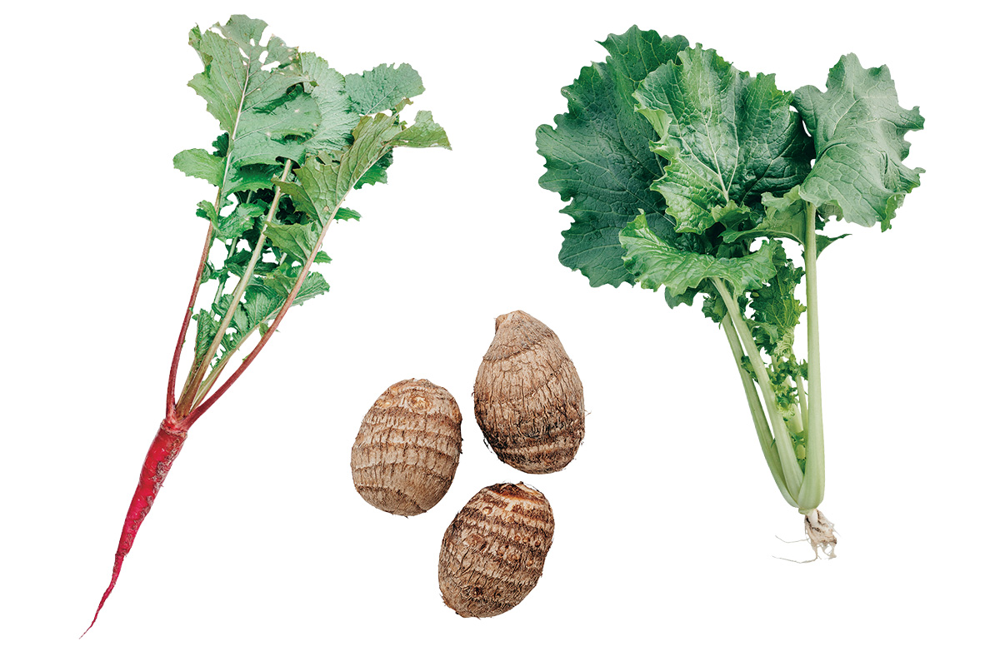
Овощами Ямато называют две группы. Первая это 20 «традиционных овощей Ямато»: их выращивали в префектуре ещё до войны, растят по старым местным способам, и у каждого свой вкус, запах, форма и своя история. Вторая это пять «особых овощей Ямато», которые выделяются способом выращивания или сбора и вкусом. Их и сейчас растят по всей Наре.
Попробовать их проще всего в ресторане «Киёсуми-но сато Ава». Его курсы построены на традиционных овощах Ямато и зерне, которые растят здесь же, в деревне Киёсуми. Вкус каждого продукта раскрыт бережно, а из окон видна вся равнина Нара. В самом городе Нара работает второй ресторан, «Ава Нарамати».
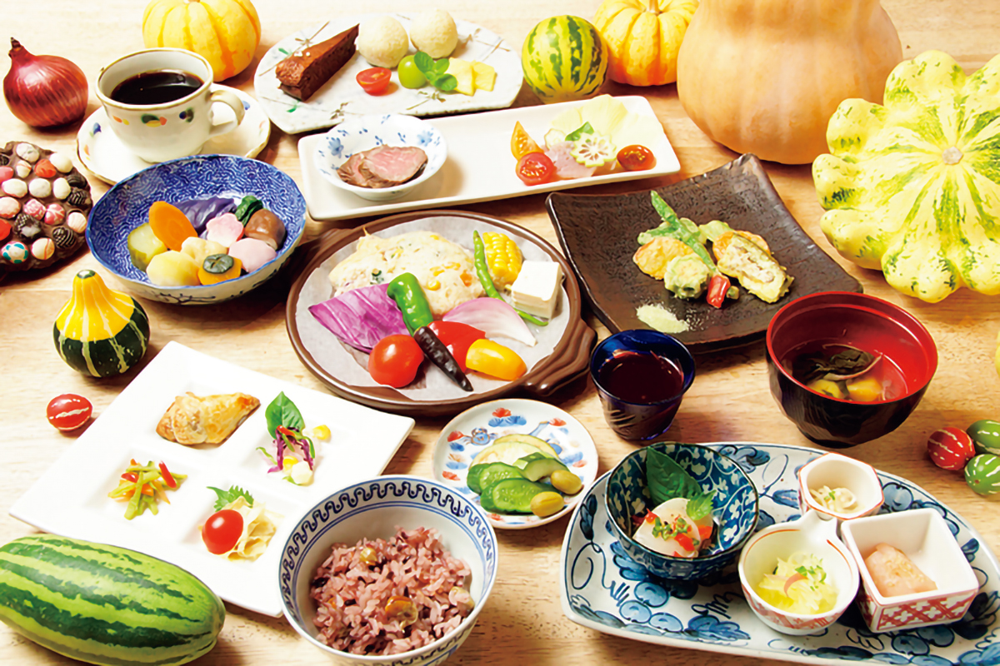
«Киёсуми-но сато Ава»
- Адрес
- префектура Нара, Нара, Такахи-тё, 861
- Телефон
- +81 742-50-1055 (только по предварительной записи)
- Часы работы
- 11:45–16:00 (последний заказ в 15:30)
- Выходные
- с понедельника по четверг
- Сайт
- kiyosumi.jp
Мандзю
Святилище Хаяси: бог сладкой булочки
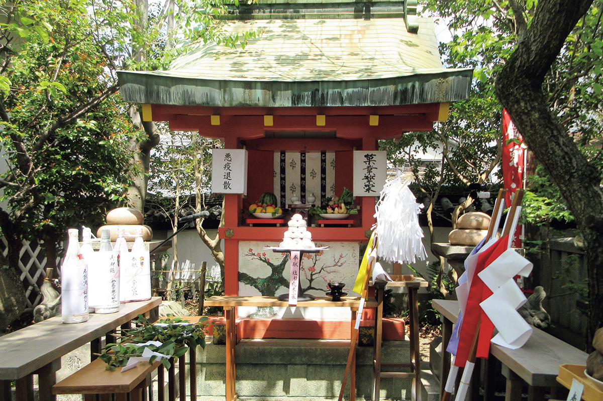
На территории святилища Канго в центре города стоит святилище Хаяси, единственное в Японии святилище, посвящённое мандзю. Здесь почитают Дзёина Хаяси, бога-покровителя кондитеров. Этот монах приехал из Китая в начале периода Муромати (XIV век), жил у ворот святилища Канго и первым познакомил Японию с мандзю, булочками на пару с начинкой. Родом он был из провинции Чжэцзян и происходил из рода известного китайского поэта. Его мандзю, говорят, подносили даже ко двору императора.
Святилище Хаяси
- Адрес
- префектура Нара, Нара, Канго-тё, 2
- Телефон
- +81 742-22-0612
- Часы работы
- 6:00–18:00
Мандзю в Наре стоит попробовать в кондитерской «Тиёноя Такэмура», основанной в 1701 году. Её «Нара-мандзю» сделаны по рецепту, который привёз Дзёин Хаяси, но с современным вкусом. Их два вида: с клеймом «Хаяси» внутри тёмная паста из фасоли адзуки, с клеймом в виде оленя внутри белая.
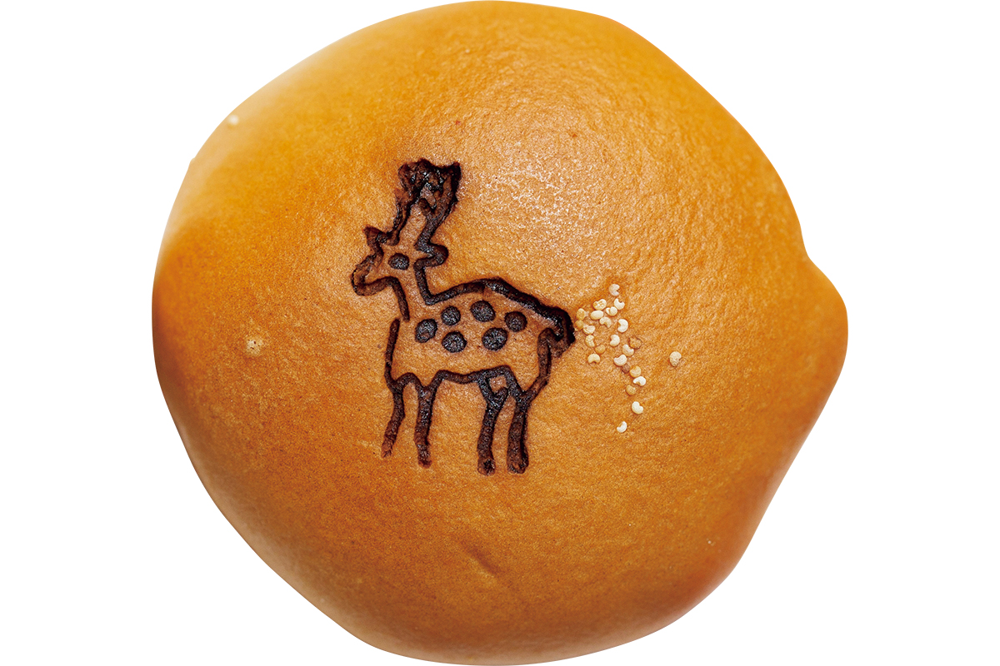
«Тиёноя Такэмура»
- Адрес
- префектура Нара, Нара, Хигасимуки-Минами-мати, 22 (торговая улица Хигасимуки)
- Телефон
- +81 742-22-2325
- Часы работы
- 10:00–17:00
- Выходные
- четверг
Лёд
Святилище Химуро: где хранили лёд
Святилище Химуро почитает богов, покровительствующих льду. В период Нара (VIII век) на равнине Касуганоно устроили «пруд льда», где лёд намораживали, а у подножия горы Микаса построили ледник, где его хранили. Святилище появилось как храм их богов-хранителей. В начале эпохи Хэйан его перенесли на нынешнее место. Изначальное святилище стоит в районе Фукусуми города Тэнри, и там каждый год 1 июля проходит «Кэмпё-сай», праздник подношения льда.
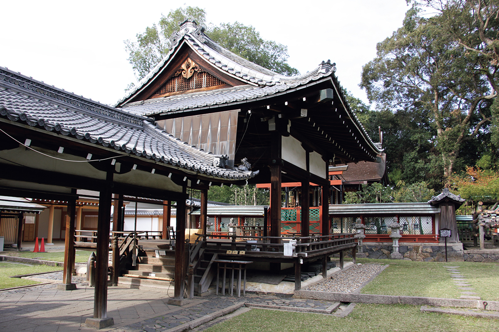
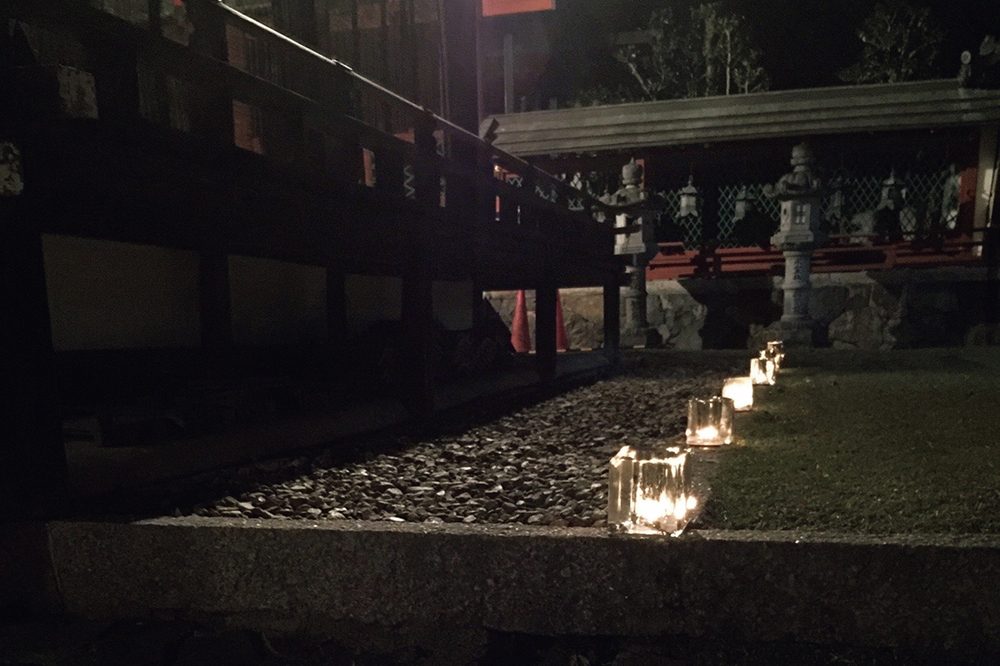
Святилище Химуро
- Адрес
- префектура Нара, Нара, Касугано-тё, 1-4
- Телефон
- +81 742-23-7297
- Часы работы
- 6:30–17:30 (ноябрь–март), 6:00–18:00 (апрель–октябрь)
- Сайт
- himurojinja.jp
Колотый лёд в Наре едят круглый год, и моду на него запустила лавка «Хосэки-бако». Особенно любят её какигори с «Котока», клубникой, которую вывели в Наре.
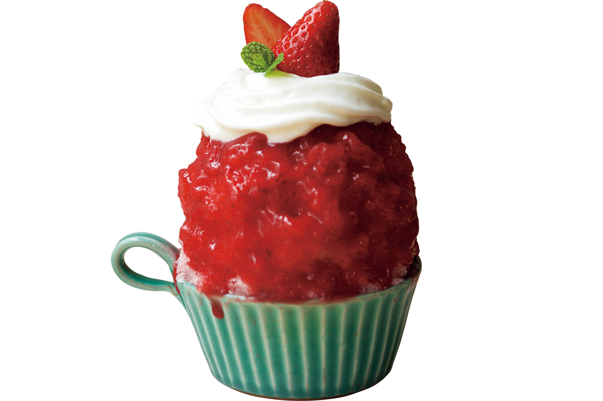
«Хосэки-бако»
- Адрес
- префектура Нара, Нара, Мотииидоно-тё, 47
- Телефон
- +81 742-93-4260
- Часы работы
- 10:00–17:00, по субботам, воскресеньям и праздникам до 17:30
- Выходные
- четверг
- Сайт
- airrsv.net
Ремёсла
Веер и тушь
Ремёсел в Наре много, но теснее всего с храмами и святилищами связаны два: нарский веер утива и нарская тушь. Нарский веер, по одной из версий, начался в период Нара, когда жрецы святилища Касуга-тайся сделали «нэги-утива» по образцу китайского церемониального опахала. Тушь, как считают, начали делать в Асуке. Когда столица переехала в Киото, в Наре осталось множество храмов, а им тушь была нужна для переписывания сутр и учёбы, поэтому мастерские туши остались здесь.
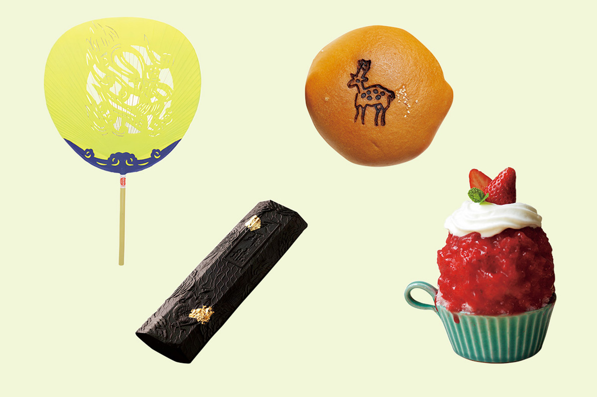
Святилище Касуга-тайся и нарский веер
Нарский веер считают старейшим веером для обмахивания в Японии, а его прообразом называют «нэги-утива», который делали жрецы святилища Касуга-тайся. У него нарядная ажурная резьба и много тонких рёбер: веер гнётся и даёт хороший ветер.
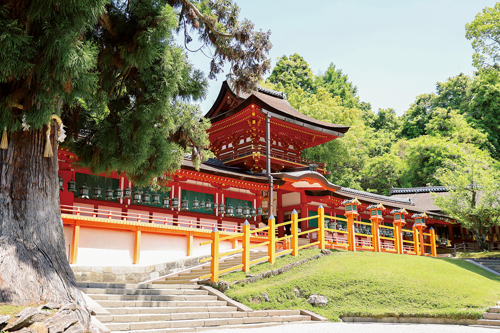
Святилище Касуга-тайся
- Адрес
- префектура Нара, Нара, Касугано-тё, 160
- Телефон
- +81 742-22-7788
- Часы работы
- 7:00–17:00 (зависит от сезона)
Купить нарский веер можно в «Икэда Ганкодо». Мастерская появилась в конце периода Эдо и возродила нарский веер, который перестали делать в середине того же периода. Это единственный в Японии магазин, где продают только нарские веера, и сегодня их делает уже шестое поколение семьи, всё так же дома, своими руками.
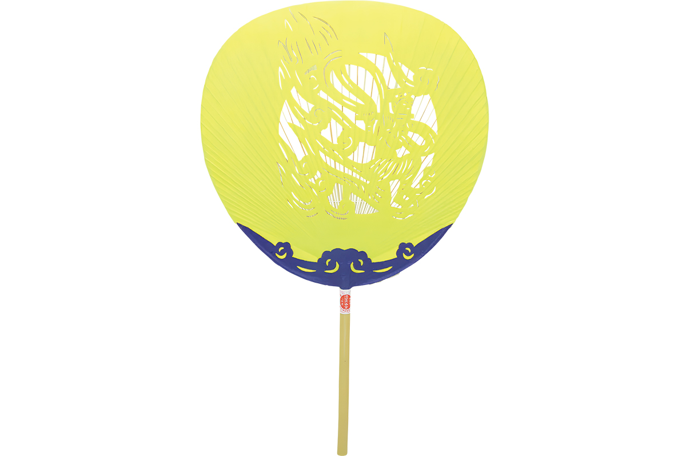
«Икэда Ганкодо»
- Адрес
- префектура Нара, Нара, Цунофури-тё, 16 (улица Сандзё)
- Телефон
- +81 742-22-3690
- Часы работы
- 9:00–18:00
- Выходные
- понедельник (сентябрь–март), без выходных (апрель–август)
- Сайт
- narauchiwa.com
Нарская тушь
Нарской туши 1 300 лет, со времён Тэмпё. В Японию тушь, как считают, пришла из танского Китая. Храму Кофукудзи она была нужна для письма и переписывания сутр, и при его подворье Нитайбо держали собственных мастеров туши, которые делали её в больших количествах.
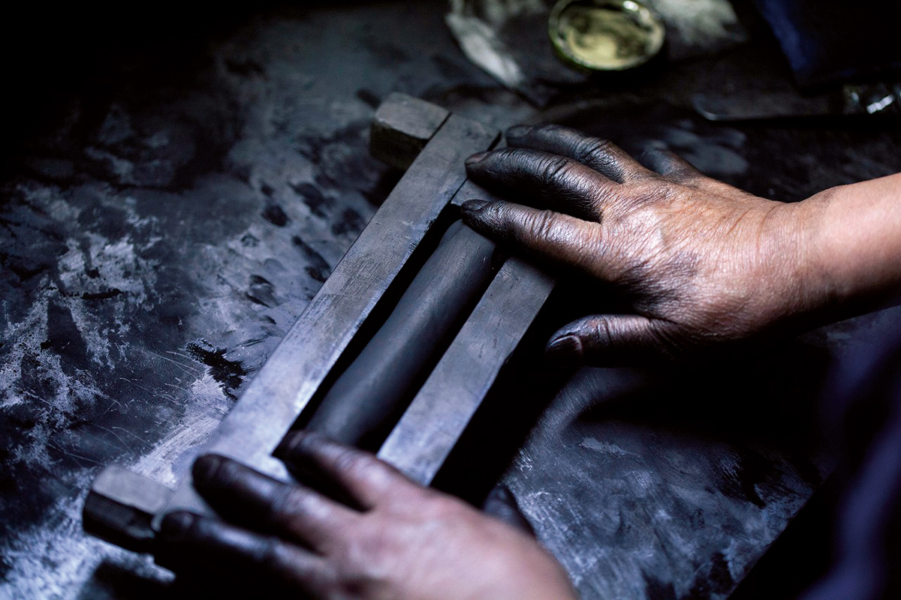
Нарскую тушь больше 150 лет делает мастерская «Кинкоэн». В 2026 году она особенно много работала с тушью из сажи сосны: её получают, сжигая древесину японской красной сосны. Такая тушь даёт глубокий чёрный цвет.
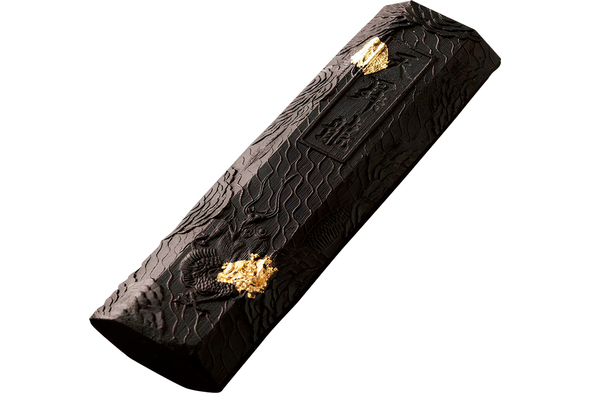
«Кинкоэн»
- Адрес
- префектура Нара, Нара, Сандзё-тё, 547
- Телефон
- +81 742-22-3319
- Часы работы
- 9:00–18:00
- Выходные
- без выходных
- Сайт
- kinkoen.jp
Фото: отдел туризма города Уда, святилище Химуро, святилище Касуга-тайся, «Кинкоэн».